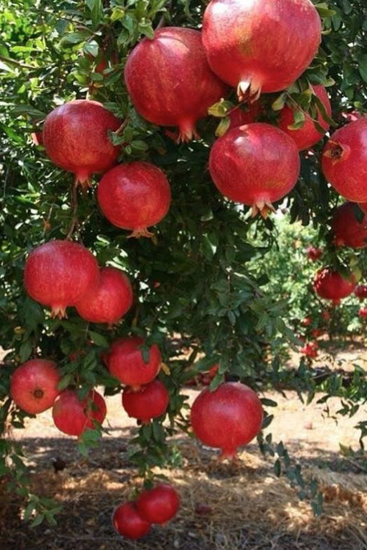

Leitura Orante
Leituras do Dia
Sábado da 23ª Semana do
Tempo Comum
(Verde -Ofício do dia)
12 de setembro de 2020

Oração do dia
Ó Deus, Pai de bondade, que nos redimistes e adotastes como filhos e filhas, concedei aos que crêem em
Cristo a verdadeira liberdade e a herança eterna. Por Nosso Senhor Jesus Cristo, Vosso Filho, na unidade do
Espírito Santo.
Leitura: 1 Coríntios 10,14-22
14Meus caríssimos, fugi da idolatria. 15Eu vos falo como a pessoas esclarecidas. Então, ponderai bem o que eu digo: 16o cálice da bênção, o cálice que abençoamos, não é comunhão com o sangue de Cristo? E o pão que partimos não é comunhão com o corpo de Cristo? 17Porque há um só pão, nós todos somos um só corpo, pois todos participamos desse único pão. 18Considerai os filhos de Israel: os que comem as vítimas sacrificais não estão em comunhão com o altar? 19Então, o que dizer? Que a carne de um sacrifício idolátrico tem algum valor? Ou que o ídolo vale alguma coisa? 20Nada disso. O que eu digo é que os idólatras oferecem seus sacrifícios aos demônios e não a Deus. Ora, eu não quero que entreis em comunhão com os demônios. 21Vós não podeis beber do cálice do Senhor e do cálice dos demônios; vós não podeis participar da mesa do Senhor e da mesa dos demônios. 22Ou, quem sabe, queremos excitar o zelo santo do Senhor? Somos porventura mais fortes do que ele? – Palavra do Senhor.
Salmo Responsorial: 115(116)
Oferto ao Senhor um sacrifício de louvor.
Que poderei retribuir ao Senhor Deus por tudo aquilo que ele fez em meu favor? Elevo o cálice da minha salvação, invocando o nome santo do Senhor.
Oferto ao Senhor um sacrifício de louvor.
Por isso oferto um sacrifício de louvor, invocando o nome santo do Senhor. Vou cumprir minhas promessas ao Senhor na presença de seu povo reunido.
Oferto ao Senhor um sacrifício de louvor.
Evangelho: Lucas 6,43-49
Naquele tempo, disse Jesus aos seus discípulos: 43“Não existe árvore boa que dê frutos ruins nem árvore ruim que dê frutos bons. 44Toda árvore é reconhecida pelos seus frutos. Não se colhem figos de espinheiros nem uvas de plantas espinhosas. 45O homem bom tira coisas boas do bom tesouro do seu coração. Mas o homem mau tira coisas más do seu mau tesouro, pois sua boca fala do que o coração está cheio. 46Por que me chamais: ‘Senhor! Senhor!’, mas não fazeis o que eu digo? 47Vou mostrar-vos com quem se parece todo aquele que vem a mim, ouve as minhas palavras e as põe em prática. 48É semelhante a um homem que construiu uma casa: cavou fundo e colocou o alicerce sobre a rocha. Veio a enchente, a torrente deu contra a casa, mas não conseguiu derrubá-la, porque estava bem construída. 49Aquele, porém, que ouve e não põe em prática é semelhante a um homem que construiu uma casa no chão, sem alicerce. A torrente deu contra a casa, e ela imediatamente desabou; e foi grande a ruína dessa casa”. . – Palavra da Salvação.
Leituras do mês
TAGS
missao Amazonia evengel covid-19 indigenas novica papa francisco
Destaques
Província Stella Matutina
Rua São Benedito, 2146 - Santo Amaro - São Paulo - SP |
Tel. (11)
5547-7222


Província Spiritus Divinae Sapientiae
Rua Arnaldo Janssen, 320 - Cara-Cara - Ponta Grossa - PR |
Tel. (42) 3326 4091